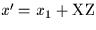
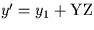
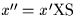
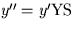
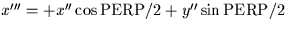
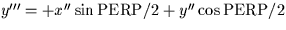
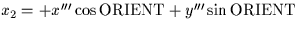
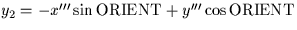

| COEFFS | D(6) | transformation coefficients (see note) |
|---|
| XZ | D | x zero point |
|---|---|---|
| YZ | D | y zero point |
| XS | D | x scale |
| YS | D | y scale |
| PERP | D | nonperpendicularity (radians) |
| ORIENT | D | orientation (radians) |
x2 = a + bx1 + cy1The sla_DCMPF routine decomposes this transformation into four steps:
y2 = d + ex1 + fy1








SLALIB --- Positional Astronomy Library